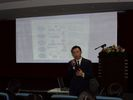

COSA活動記錄簿
留下COSA所辦活動之紀錄
首頁
相簿目錄
::
最新上傳
::
最新留言
::
熱門圖片
::
最高評分
相簿首頁
>
會員大會
熱門圖片 - 會員大會
NOVELL展場-1
111 次觀看

111 次觀看
111 次觀看
111 次觀看
111 次觀看
111 次觀看
報到處
110 次觀看
110 次觀看
109 次觀看
109 次觀看
109 次觀看
107 次觀看
149 張圖片，共 13 頁
1
2
3
4
5
6
7
8
9
10
11
13


.jpg "檔案名稱=1 (37).jpg
檔案大小=41KB
圖片尺寸=800x600
加入日期=四月 24, 2007")